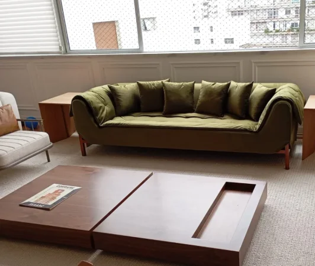

01 / APLICAÇÃOUma identidade. Dois ritmos.
O manual da marca define quem é a Stanza. Este guia mostra como montar cada peça de comunicação: medidas, hierarquia, componentes e critérios de revisão.
APRESENTAÇÃOFeito para o seu
jeito de morar.
Uma fotografia real, uma escolha para começar.
- Site público e materiais comerciais: composição editorial, fotografia real, títulos expressivos e espaço para a peça aparecer.
- Stanza Gestão: leitura rápida, informação alinhada, controles previsíveis e prioridade para as tarefas. Títulos funcionais usam a fonte de interface; não transformar o sistema em uma página de propaganda.
- E-mails: uma coluna, logo original, motivo claro, resumo, uma ação principal e contatos. Preservar a alternativa em texto simples.
- Este guia orienta personalizações futuras. O tema legado do sistema pode ser atualizado por etapas; a criação do guia não significa que todas as telas já foram redesenhadas.
02 / APLICAÇÃOFontes com função.
Use duas famílias e uma hierarquia pequena. A tipografia cria personalidade na apresentação e clareza no trabalho diário.
A peça ganha presença.
Texto de interface: claro, próximo e legível.
Detalhe útil. Não uma condição escondida.
- Editorial: Palatino Linotype, Book Antiqua, Palatino ou Georgia. Peso regular. Itálico reservado a uma palavra ou expressão com sentido, sem repetir o recurso em todos os títulos.
- Interface e parágrafos: Segoe UI ou fonte do sistema, com Arial como alternativa. Texto comum em 16 px e entrelinha de 1,5 a 1,7. Campos e tabelas entre 14 e 16 px; rótulos importantes nunca dependem de letras minúsculas ou pouco contraste.
- Escala de referência: 12, 14, 16, 20, 26, 36, 48 e 64 px. No site, títulos maiores podem variar com a largura; no sistema, títulos de 24 a 32 px costumam ser suficientes.
- Título editorial: entrelinha de 1,0 a 1,12 e largura curta. Parágrafos: em geral 45 a 75 caracteres por linha. Evitar justificar texto na tela.
- E-mails: Georgia nos títulos e Arial no corpo. Não depender de fontes externas. Conferir acentos e quebra das palavras em celular.
03 / APLICAÇÃOCor para orientar.
A paleta combina o preto e dourado do logo com oliva e marfim. As cores de identidade e contato vêm de data/brand.json.
Tinta#27332B
Oliva#40573E
Verde profundo#293E2D
Marfim#F4F1E9
Branco quente#FFFDFA
Verde claro#E6E8DC
Texto secundário#5E665C
Linha#D6D7CB
Dourado de apoio#B39566
Dourado do logo#CA9659
Tinta / marfim
11.67:1
Oliva / branco
7.92:1
Secundário / marfim
5.27:1
- Tinta e verde profundo fazem a leitura. Oliva conduz a ação principal. Marfim é a base; branco quente organiza campos e áreas de conteúdo.
- Dourado é detalhe: linha, pequeno acabamento ou elemento do logo. Não usar dourado como texto pequeno sobre fundo claro.
- Texto comum precisa de contraste de pelo menos 4,5:1; texto grande, 3:1. Campos e indicadores visuais relevantes também precisam permanecer perceptíveis. Verificar pares reais, inclusive estados de foco e erro.
- Status precisa de palavra ou ícone além da cor. Exemplo: 'Novo', 'Em atendimento' e 'Encerrado'. Um verde mais claro não pode ser a única diferença entre dois estados.
- Tema escuro, impressão e aplicativos de e-mail precisam de revisão própria. Não inverter automaticamente os tons sem comparar a leitura.
04 / APLICAÇÃORitmo, escala e fotografia.
Organize a moldura e a informação; preserve as proporções do móvel. A variação de tamanho deve ter uma razão visível.

A moldura organiza. A peça mantém sua proporção.- Use a escala de espaçamento: 4, 8, 12, 16, 24, 32, 48, 64 e 96 px. Conteúdo relacionado fica próximo; a mudança de assunto ganha um intervalo maior.
- Site: largura de conteúdo até 1280 px, com margens fluidas. Começar a revisão em 320 e 390 px; depois conferir tablet e computador. Uma coluna no celular quando os cards perderem leitura.
- Inicial: destaques podem variar de tamanho, como uma página editorial. Catálogo: molduras uniformes para comparar peças. Portfólio: proporção 4:3. Ficha da peça: foto inteira, em sua proporção natural.
- Nunca esticar a imagem para preencher um espaço. Ajustar a moldura ou o enquadramento. Na ficha, não cortar pés, braços ou almofadas para caber em uma grade.
- Ambientes bonitos são parte do acervo. Preservar o fundo original do sofá verde. Trocar fundo só quando prejudicar a apresentação, comparando a peça antes e depois em detalhe.
- No sistema, agrupar a navegação por tarefa e abrir somente o grupo necessário. Manter controles confortáveis e rolagem quando ela for necessária, sem comprimir tudo para caber.
05 / APLICAÇÃOComponentes previsíveis.
Uma ação precisa dizer o que faz. O mesmo componente mantém o mesmo comportamento em todas as telas.
- Botão principal do site: oliva, texto branco, altura de referência 52 px e cantos de 2 px. Controles compactos mantêm área de toque próxima de 44 px. Ação secundária usa contorno ou link; não multiplicar botões principais no mesmo grupo.
- Estados obrigatórios: normal, foco de teclado, hover, carregando, desabilitado e erro quando aplicável. O foco tem contorno visível; não removê-lo para limpar o visual.
- Campos têm rótulo permanente. Placeholder é exemplo, não substitui o rótulo. Telefone recebe máscara durante a digitação; cidade depende da UF. O erro explica como corrigir sem apagar o restante do formulário.
- Cards servem para itens paralelos, como referências do catálogo. Para sequências, textos ou dados, preferir linhas, listas ou tabela. Não colocar cada parágrafo dentro de um cartão arredondado.
- No recebimento: só afirmar 'registrado' depois do recibo do servidor. Em falha, preservar o projeto e oferecer nova tentativa. Preço, prazo e execução dependem da avaliação da Stanza.
- Movimento decorativo deve ser discreto, pausar fora da tela e respeitar redução de movimento. A página continua útil com imagem estática.
06 / APLICAÇÃOPersonalidade vem da Stanza.
Para evitar aparência genérica, a decisão visual precisa nascer do acervo, da linguagem e da tarefa real da empresa.
- Começar com uma foto real e uma informação concreta. Evitar títulos intercambiáveis como 'eleve sua experiência', selos decorativos, números inventados e frases de efeito repetidas.
- Alternar fotografia, texto, linhas e espaços. Não repetir em toda seção o mesmo trio de cards, chips arredondados, sombras e degradês.
- Manter uma ação principal por contexto. No site, pedir avaliação; no sistema, executar a tarefa. A entrada da equipe fica no sistema interno, protegida por login e autorização.
- Ao editar uma foto, comparar costuras, braços, pés, almofadas, cor e volume. Se a peça mudar, descartar a edição. Não inventar composição do tecido ou medidas por imagem.
- Antes de aprovar: conferir conteúdo, hierarquia, contraste, celular, teclado, foto inteira e destino dos links. Uma tela bonita que esconde o próximo passo ainda precisa de revisão.
- Ao pedir uma personalização à IA, fornecer este guia, o manual da marca, o logo original e fotos autorizadas. Exigir uma mudança coerente por vez e comparação visual com a versão anterior.